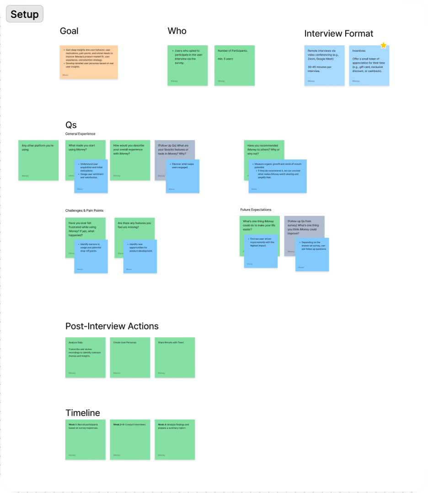
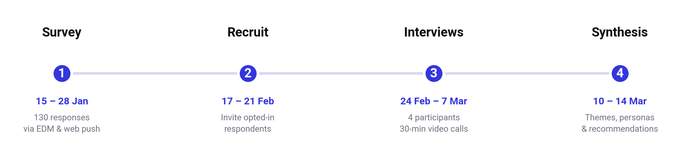
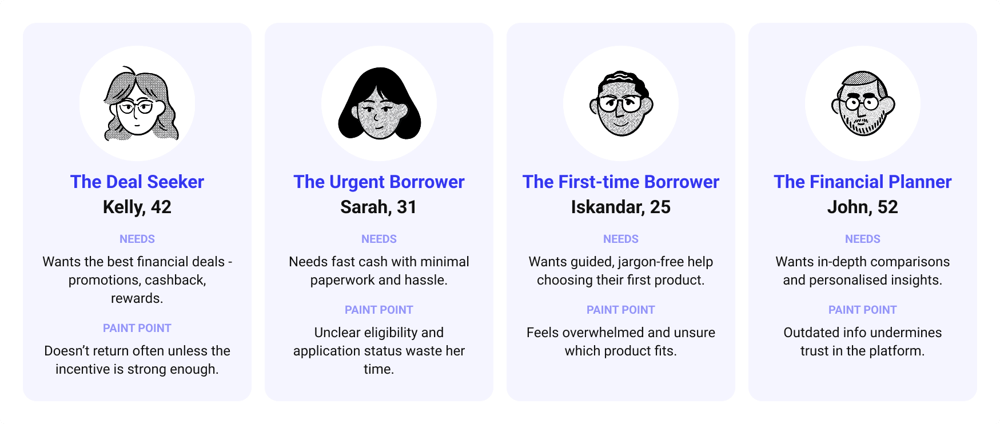
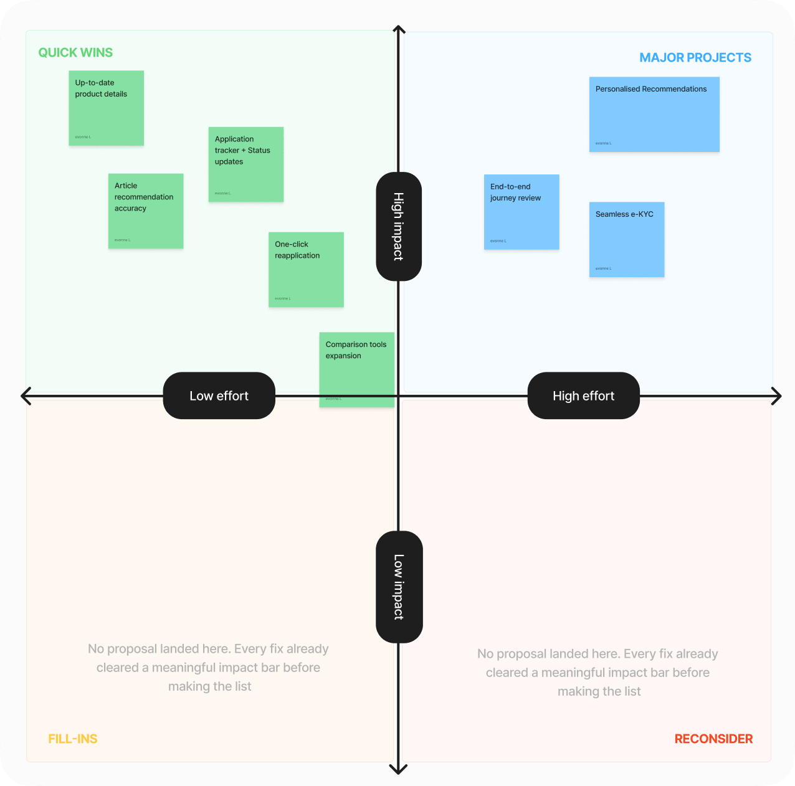

Overview專案概述
iMoney is a Malaysian platform for financial products and services — loans, credit cards, comparison tools, financial guides. I joined as iMoney’s first UI/UX designer, and no user research or personas existed yet. Product and design decisions were being made on assumption rather than evidence, with no shared understanding of who we were actually designing for.
iMoney 是一個馬來西亞的金融產品與服務平台——提供貸款、信用卡、比較工具與理財指南。我是 iMoney 的第一位 UI/UX 設計師，加入時公司尚未有任何使用者研究或人物誌——產品與設計決策大多基於假設而非證據，團隊對「我們究竟在為誰設計」也缺乏共識。
Setting It Up專案的起點
I proposed closing that gap to my manager. She agreed, and let me own the project end-to-end. The goal is to understand user behavior, pain points, and expectations, and turn that into personas and a prioritised list of fixes the team could design around.
我向主管提案來補上這個缺口。她同意了，並讓我端到端主導整個專案——目標是理解使用者的行為、痛點與期待，並將其轉化為人物誌與一份團隊能據以設計、具優先順序的改善清單。
Drafted the plan擬定研究計畫
Objectives, timeline, target participants, interview structure.
研究目標、時程、目標受訪者與訪談架構。
Reviewed with my manager與主管審核討論
Revised the plan based on her feedback.
根據她的回饋修訂計畫。
Looped in stakeholders串聯利害關係人
Finance for the incentive, Data for the participant name list, Marketing for the EDM and web push.
財務部負責獎勵金、數據團隊提供受訪者名單、行銷團隊協助 EDM 與網頁推播。

The Research Process研究流程
Two phases: a survey to understand what was happening at scale, then interviews to understand why.
研究分為兩個階段:先透過問卷大規模了解「發生了什麼事」，再透過訪談深入理解「為什麼」。

The survey ran for two weeks (15–28 Jan) via 2 EDMs and 2 web pushes, closing with 130 responses across 9 questions on brand awareness, usage, satisfaction, and demographics. The final question served as a recruitment tool, inviting participants to schedule a follow-up interview. Thus, Phase 2 required no separate campaign.
問卷調查為期兩週(1 月 15 日至 28 日)，透過 2 次 EDM 與 2 次網頁推播發送，最終收到 130 份回覆，涵蓋品牌認知、使用情形、滿意度與人口屬性共 9 道題目。最後一題同時肩負招募任務——是否願意接受後續訪談?——因此第二階段完全不需要另外進行招募。
I’ve looked over the results and figured out what’s going well and where we can make some tweaks.
使用頻率大多不高——63% 的使用者每月使用一次或更少。
What’s Working做得好的部分
- Good financial guidance / tips
- Ability to compare financial products
- The credit card comparison tool
- 實用的理財指南與貼士
- 能夠比較各種金融產品
- 信用卡比較工具
What Needs Improvement待改善的部分
- Faster response to applications
- Status updates on applications
- Better deals to motivate applying
- 更快回應申請
- 申請進度的狀態更新
- 更吸引人的優惠以提高申請意願
Then, Digging Into the Why接著，深入探究原因
The survey told us people wanted faster responses, clearer status updates, and better deals. So I followed up with four 30-minute video interviews (24 Feb–7 Mar), branched by usage frequency. The three most comprehensive respondents received a RM50 Touch ’n Go e-credit as thanks.
問卷告訴我們使用者想要更快的回應、更清楚的狀態更新、更好的優惠——卻沒告訴我們這些事情為什麼重要到足以讓人離開。於是我進行了四場 30 分鐘的視訊訪談(2 月 24 日至 3 月 7 日)，依據使用頻率分流。回答最完整的三位受訪者獲得 RM50 Touch 'n Go 電子錢包回饋金作為感謝。
Meet the Users Behind the Numbers認識數字背後的使用者
Four interviews, layered on 130 survey responses, surfaced four distinct relationships with iMoney.
四場訪談疊加在 130 份問卷回覆之上，浮現出四種截然不同的「與 iMoney 的關係」。

From here, the team could design around Sarah or John instead of arguing about what “the user” wanted.
從此以後，團隊可以直接針對 Sarah 或 John 來設計，而不必再爭論「使用者」到底想要什麼。
Findings & Actions我們的發現——以及我們的因應之道
iMoney didn’t have a formal roadmap for this area yet, so each proposal needed to make its own case. Each finding below pairs a user’s voice with a proposed fix — so the report doubled as a starting roadmap.
iMoney 在這個領域尚未有正式的路線圖，因此每項提案都得自己站得住腳。以下每項發現都以使用者的聲音搭配對應的解方——讓這份報告同時也是一份起始路線圖。
“I never heard back.”
「我後來都沒收到回覆。」
— Interview participant—— 受訪者
Users expected iMoney to follow up after showing intent.
使用者在展現意願後，期待 iMoney 主動跟進;沉默則被解讀為忽視。
An improved application tracker with real-time status updates.
升級版申請進度追蹤器，提供即時狀態更新。
“The content felt so outdated, I wasn’t sure if I was looking at the right info.”
「內容感覺好過時，我都不確定自己看到的資訊是不是正確的。」
— Interview participant—— 受訪者
Stale content made people doubt the rest of the platform too.
過時的內容也讓使用者開始懷疑平台上其他資訊。
Keep product details current — treat accuracy as a trust feature.
讓產品資訊保持時效性——將準確度視為一項信任功能。
“I visit iMoney more than [a competitor] for the articles.”
「我造訪 iMoney 的頻率比〔某競品〕還高——是為了文章。」
— Interview participant—— 受訪者
Our editorial content was quietly boosting repeat visits, which is a great thing to keep up!
這是需要守護的優勢:編輯內容本身默默帶動了不少回訪。
More accurate article recommendations.
優化文章推薦的精準度。
Prioritising the Fixes: Impact vs. Effort決定優先順序:影響力 vs. 投入成本
To make the case for what to act on first, I mapped every proposal against impact and effort:
為了說明應該先從哪裡著手，我將每項提案依影響力與投入成本進行了評估:

Where Things Stand Now目前的進展
I shared the results and suggestions with the product team, and the quick wins are now the first things on iMoney’s roadmap for this area. Things are moving slowly — some are moving forward, while others are still being considered against what the engineering team needs.
我將研究發現與建議提案回報給產品團隊，快速見效方案也成為 iMoney 在這個領域路線圖上的首批項目。進展是漸進式的——部分已在推進，其餘則仍在與工程優先順序權衡中。
Going forward, I’m watching return visit rate, application completion rate, and article engagement to see if the trust gap has narrowed.
接下來，我會持續關注回訪率、申請完成率與文章互動率，了解信任缺口是否已有所縮小。
What I Learned下次我會怎麼做
Small samples still move things forward, if you pair them right小樣本只要搭配得當，依然能推動事情前進
Just four interviews seemed a bit sparse on their own, but when we added the survey data, we quickly uncovered some really clear themes.
單看四場訪談確實單薄，但疊加在問卷數據之上，卻能快速浮現出清晰的主題。
Incentive design shapes the data, not just the turnout誘因設計影響的不只是參與率，還有資料本身
Rewarding “most comprehensive” over “participated” nudged more thoughtful answers.
獎勵「回答最完整」而非「有參與」，促使受訪者給出更深思熟慮的回答。
Note: participant identities and raw contact details have been kept confidential; all figures and quotes above are drawn directly from the original survey and interview data.
備註:受訪者身分與原始聯絡資訊均已保密;以上所有數據與引述皆直接取自原始問卷與訪談資料。